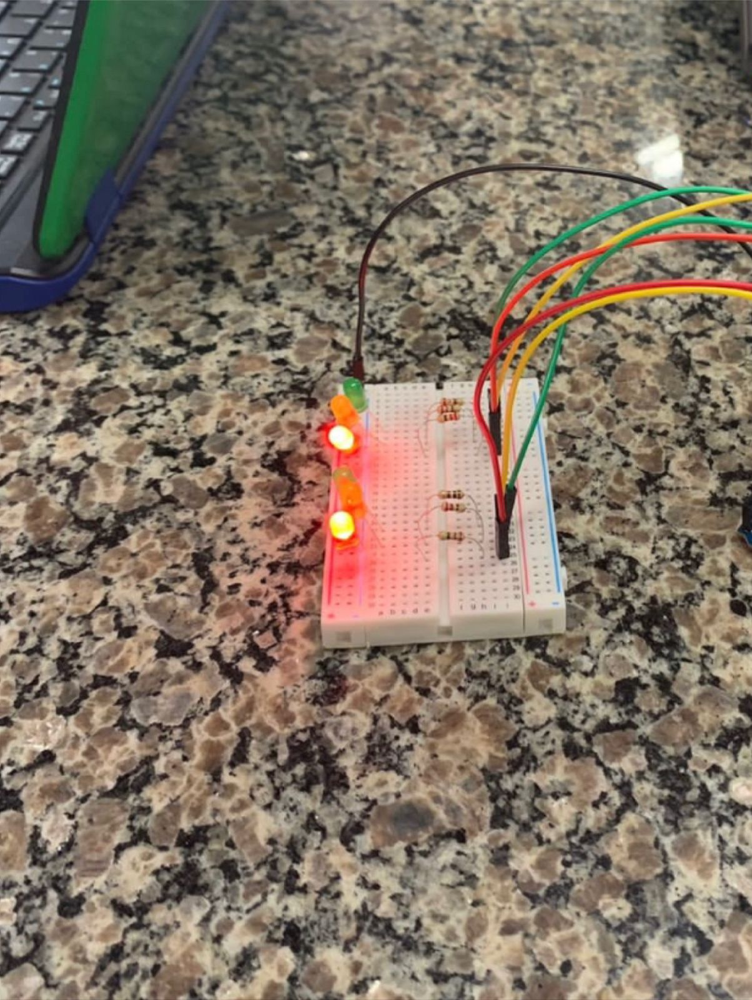
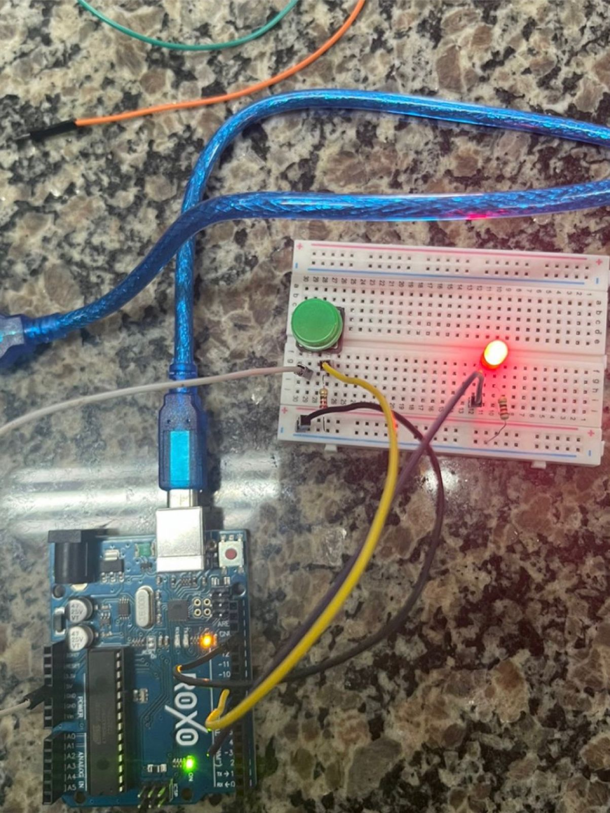
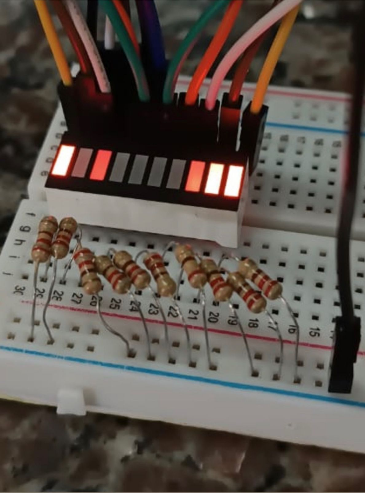

Nossos Trabalhos

Onda Verde

BUZZER PASSIVO: O Buzzer Passivo tem como característica a possibilidade de controle de frequência, variação das notas musicais e duração do tempo e som. Em sua estrutura há uma célula piezoelétrica que vibra de acordo com o sinal aplicado em seus terminais, produzindo o som.

SEMÁFORO CARRO E PEDESTRES: Este projeto visa a demonstrar como funciona a sincronização entre os semáforos para motoristas e para pedestres.

PUSH BOTTON: O botão de pressão(Push Botton), também conhecido como Chave Táctil, é um dispositivo utilizado para acionar, abrindo ou fechando um determinado circuito.

PUSH BOTTON: O botão de pressão (Push Botton), também conhecido como Chave Táctil, é um dispositivo utilizado para acionar, abrindo ou fechando um determinado circuito.